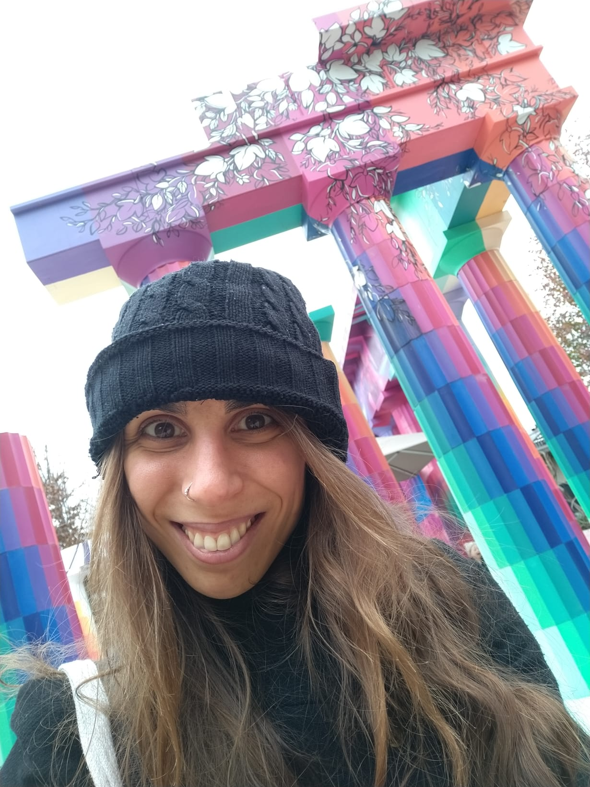

Hi everyone!
I am Sandra Álvarez-Carretero, a computational biologist working as a senior research associate in phylogenomics at University of Bristol with Phil Donoghue, Tom Williams, and Davide Pisani.
Even though now I cannot imagine a day working without my laptop, my career started at the wet lab and, little by little, I specialised in computer science.
You can learn more about my research in evolution by following the next links:
You can also check my personal linktr.ee site for an easy access to the following content:
If you have any questions or would like to discuss possible project collaborations, please contact me.